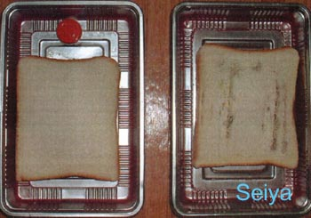

光觸媒應用產品與模組加工(設計、合作)與代工步驟：
1. 依客戶所需(討論用途、目標價)；使用環境條件，其抗菌或抗污效除臭....等不同功能是否可行。
2. 依被加工材料或元件，選用最佳之光觸媒原料及最佳節省原料之加工法。
3. 產品或模組使用光學設計，使其充份發揮其效果。
4. 其它(專利、安規、效能驗證...等)。
世屋光觸媒加工自2002年從日本引進台灣，已具有10多年之加工技術與經驗，並榮獲政府研發補助。

說明
光觸媒超氧化作用是因為受到光的能量而激發，在正孔處(Hole)產生了OH基，它具有120Kcal/mol的能量，然而構成有基化合物的能量大都在100Kcal/mol以下，光觸媒可以將微生物分解成為無害的水或及二氧化碳，因此它可作為優良的預防性抗菌材料。
光觸媒消毒機制
首先要了解消毒之定義，雖然光觸媒在光照射後可將細菌殺死，在一般在人觀念上認為是殺菌,但以醫學上之殺菌定嚴苛(詳見微生物消毒定義)。
光觸媒除菌優點
■一般消毒藥劑可將微生物殺死，卻不能將其屍體分解，且部份病毒其生物化學組織，更是可永保存在我們的地球中，以70%的酒精來說，它無法殺死腸病毒，但光觸媒在適當的設計下，可以將病毒細菌不只是殺死，而是將病毒細菌(有機物質構造)分解成為無害的水或及二氧化碳，簡單的說它是利用其氫氧根及氧將其分解，它的氧化能量比臭氧還高，一般之抗菌劑是無此功能。
■在抗新冠病毒防治方面，將此材料及技術應用在適當空間上以及空調上，是能有機會降低其感染率。
光觸媒缺點
■使用光觸媒需要許多條件，如果沒有光它是無效，另外如果只是用粉末，或一般溶液使用.....等方法，都會是無效，光觸媒是需要專業人士使用，非一般人能夠使用。
■市售光觸媒溶液或噴劑，其效果其實並不佳，原因在於分散技術，越是能夠保存久產品(一年以上)，其效果只有原本之百分之20-40不到，甚至有些產品加入其他材料，導致產品完全失效，這類產品佔市面上百分之90以上。
（一）真菌（Fungi）：常見之黴菌、蕈即是，在微生體中形體大者，有些真菌可用肉眼看到，如洋菇、香菇、靈芝等，它不行光合作用也沒有葉綠素，部份真菌要借助顯微鏡才能看的清楚，如感染植物之真菌，穀物中之黃麴菌，人類香港腳、皮膚病之病原等也是真菌。黴菌是一種依賴活的或死亡之動植物維生的植物，會造成如香港腳等疾病。
（二）細菌（Bacteria）：細菌為原核生物，體形較真菌小，須用高倍顯微鏡才能看見，細菌的大小一般以(um)微米做為測量單位，如、傷寒、霍亂、結核、化膿、破傷風等之病原病。細菌是一種極微小的單細胞生物，有些細菌可以輕易地被消滅，但有些對化學性殺菌劑較具抵抗力。細菌可能造成膿腫、腹瀉及結核病等危害。
（三）原蟲（Protozoa）：原蟲為單細胞真核微生物，沒有細胞壁(cell wall)如陰道滴虫就是常見的原蟲之一，它可藉由纖毛或鞭毛通過運動，經特殊染色法其鞭毛著色才能觀察到。
（四）藻類（Algae）：為真核細胞，含有葉綠素，會行光合作用，其細胞壁堅固，其大小不一，小的要顯微鏡才看得到，大的如綠藻及海帶均是。
（五）病毒（Viruse）：體形最小，必須用電子顯微鏡才能看見，病毒其大小為80-50nm之間，如A或B型肝炎、流行性感冒、登革熱、新冠肺炎等都是由病毒引起，病毒實際上是一種寄生物，它只能選擇性地在特定的寄主內生產與繁衍，所以它是介於有生命與無生命的地帶，部分病毒較容易被消毒藥劑殺死，例如HIV病毒（即人體免疫不全病毒，是造成愛滋病的元兇）；而像B型肝炎病毒等，對化學性殺菌劑較具抵抗力，一般我們對病毒的了解是100%的害處，事實不然，在美國曾發現某種綠藻受太陽紫外線破壞其細胞，而不能行光合作用死亡，但感染某特殊病毒，其細胞又會死而復活，地球上的病毒多到我們所想像的，因此對病毒的了解還是相當有限的。

主要有水、無機鹽、碳源、氮源、溫度及生長因子。
為何為發霉？
通常會發霉的物品和濕度及溫度有極大的相聯性，在我們的生活空間有無數的霉菌，如果提供良好的環境(濕度大)與養份，許多物品就很容易發霉，在多濕高溫的台灣，這種現象的發生率比乾燥地區高出許多，因此許多食物的保存，都是用低溫或是乾燥法來延持它的保存。
圖上方之塑膠容器經過光觸媒噴塗過，右方是未經任何處理之容器，將麵包放至容器內，室內溼度在60以上，室溫在24-27度之間，經過72小時後，右方對照組可明顯發現發霉狀況，可說明光觸媒在具有光線下，有良好抗菌能力。
■光觸媒不是萬能，對原蟲、高濃度藻類不太有效，低濃度藻類效果是可，但對病毒則是非常有效。
■但在其使用及設計上必須有許多專業知識，這也就是市面上有百分之99光觸媒產品，是根本達不到理論值60%效果，絕大部分可以說是無效的。
■新冠病毒光觸媒消毒，此類消毒在於2020-2022年間，有許多公司行號使用此方法消毒，但其實有90%以上消毒公司光觸媒消毒材料是無效，另外消毒方式作法不正確更高達99.9%，使用此材料必須對此材料有其深入了解，才能達到其效果。


1. 依客戶所需(討論用途、目標價)；使用環境條件，其抗菌或抗污效除臭....等不同功能是否可行。
2. 依被加工材料或元件，選用最佳之光觸媒原料及最佳節省原料之加工法。
3. 產品或模組使用光學設計，使其充份發揮其效果。
4. 其它(專利、安規、效能驗證...等)。
世屋光觸媒加工自2002年從日本引進台灣，已具有10多年之加工技術與經驗，並榮獲政府研發補助。